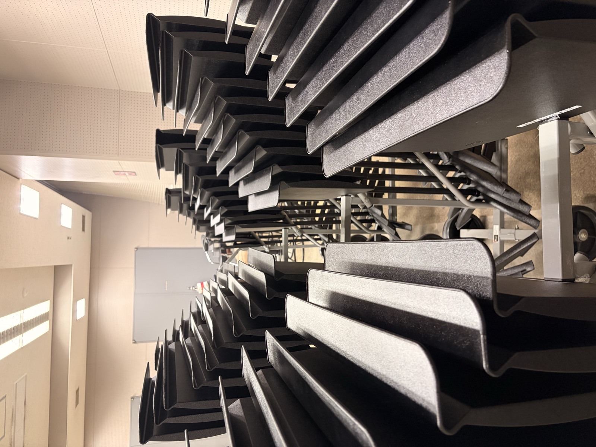
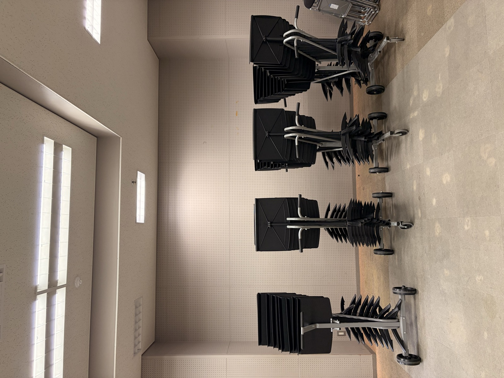

譜面台を更新しました
このたび、30年以上にわたり使用してきた約60台の譜面台を一新し、新たに70台を購入いたしました。
今回の更新は、老朽化した譜面台による事故の防止と、より良い練習環境の整備を目的としたものです。
新たに導入したのは、Wenger社の「F401」モデルです。耐久性に優れながら非常に軽量で、プロオーケストラでも使用されている高品質な譜面台です。
このたびの譜面台更新にあたり、多大なるご協力を賜りましたOBOGの皆さま、ならびにYAMAHA MUSICさまに、心より御礼申し上げます。

